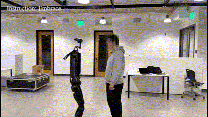
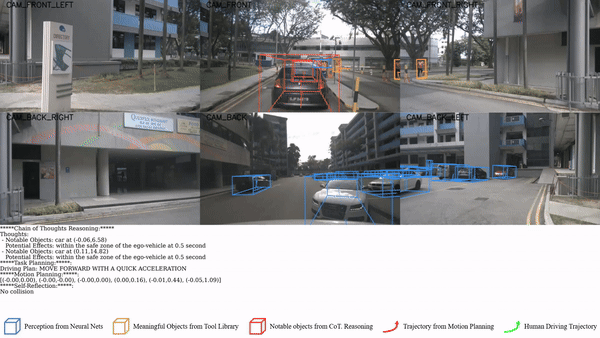
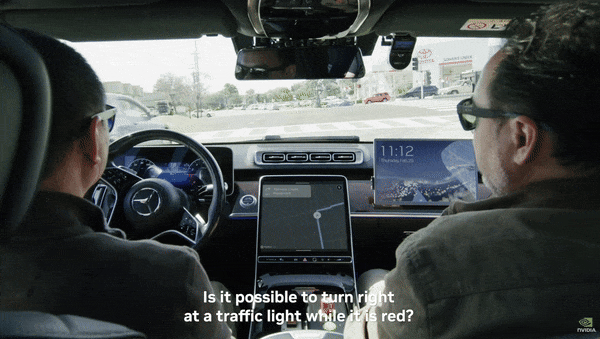
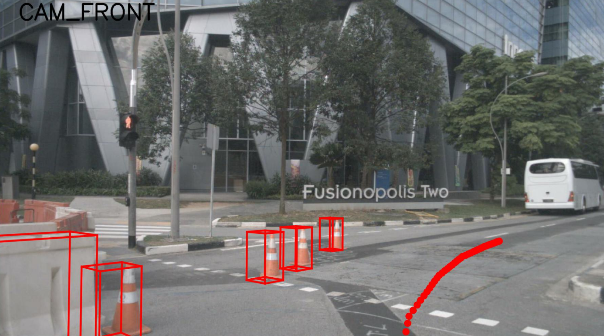
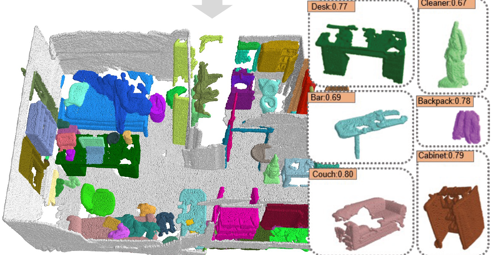

Jiageng Mao Ph.D. Student
Geometry, Vision, and Learning Lab
Department of Computer Science
University of Southern California
Los Angeles, USA
Email: jiagengm [at] usc [dot] edu |
|
Biography
I am a PhD student in Computer Science at University of Southern California, advised by Professor Yue Wang.
My research focuses on the intersection of Computer Vision and Robotics. I aim to develop algorithms that empower embodied agents to perceive, understand, and interact with the physical world in a scalable and generalizable manner.
Specifically, my work centers on three key areas:
1) Physical world modeling and understanding: Teaching robots to model and understand the physical world, including 3D/4D scene understanding and generation, physics-based vision, etc.
2) Scalable and generalizable robot learning: Improving the generalization and scalability of robotic locomotion and manipulation via large language models, learning from in-the-wild demonstrations, etc.
3) Humanoid robots and autonomous vehicles: Pushing the boundaries of perception and decision-making for embodied agents such as humanoid robots and self-driving cars.
Recent Updates
- Agent-Driver is accepted to COLM 2024 with Top 1% reviewer ratings. Kudos to all collaborators!
- RAM is accepted to CORL 2024 with an oral presentation. Kudos to all collaborators!
- Received a $5000 grant from OpenAI . Thank you OpenAI!
- Awarded Qualcomm Innovation Fellowship . Thank you Qualcomm!
- Excited to join NVIDIA Research as a research intern!
Selected Publications [Google Scholar]
|
 |
Learning from Massive Human Videos for Universal Humanoid Pose Control
Jiageng Mao*, Siheng Zhao*, Siqi Song*, Tianheng Shi, Junjie Ye, Mingtong Zhang, Haoran Geng, Jitendra Malik, Vitor Guizilini, Yue Wang.
arXiv preprint arXiv:2412.14172.
[Project Page]
[Code]
[Dataset]
We propose the first scalable approach for learning generalizable and universal pose control for humanoid robots using Internet videos. |

|
DreamDrive: Generative 4D Scene Modeling from Street View Images
Jiageng Mao, Boyi Li, Boris Ivanovic, Yuxiao Chen, Yan Wang, Yurong You, Chaowei Xiao, Danfei Xu, Marco Pavone, Yue Wang.
arXiv preprint arXiv:2501.00601.
[Project Page]
[Code]
We introduce a scalable framework for 4D spatio-temporal scene generation from street view images, opening new possibilities for navigating everywhere using street view imagery. Featured in NVIDIA's keynote talk at CES 2025. [CES-Video] |
|
 |
A Langauge Agent for Autonomous Driving
Jiageng Mao*, Junjie Ye*, Yuxi Qian, Marco Pavone, Yue Wang.
Conference on Language Modeling (COLM), 2024.
[Project Page]
[Code]
We revolutionize the traditional end-to-end driving methods by introducing a novel Agentic AI framework for autonomous driving. Top 1% reviewer ratings (Top 10 out of 1036 submissions). |

|
RAM: Retrieval-Based Affordance Transfer for Generalizable Zero-Shot Robotic Manipulation
Yuxuan Kuang*, Junjie Ye*, Haoran Geng*, Jiageng Mao, Congyue Deng, Leonidas Guibas, He Wang, Yue Wang.
Conference on Robot Learning (CORL), 2024.
[Project Page]
[Code]
We propose a retrieval-based approach for generalizable robotic manipulation. Oral presentation. |
|
 |
Driving Everywhere with Large Language Model Policy Adaptation
Boyi Li, Yue Wang, Jiageng Mao, Boris Ivanovic, Sushant Veer, Karen Leung, Marco Pavone.
IEEE Conference on Computer Vision and Pattern Recognition (CVPR), 2024.
[Project Page]
We present LLaDA, a powerful tool that enables human drivers and autonomous vehicles alike to drive everywhere with large language models. Featured at NVIDIA GTC 2024 & NVIDIA Drive Labs. [GTC-Video] [DriveLab-Video] |
|
 |
GPT-Driver: Learning to Drive with GPT
Jiageng Mao, Yuxi Qian, Junjie Ye, Hang Zhao, Yue Wang.
Neural Information Processing Systems Workshop (NeurIPSW), 2023.
[Project Page]
[Code]
The first attempt to leverage the Large Language Models (LLMs) like GPT to resolve the motion planning problem in autonomous driving. |

|
3D Object Detection for Autonomous Driving: A Comprehensive Survey
Jiageng Mao, Shaoshuai Shi, Xiaogang Wang, Hongsheng Li.
International Journal of Computer Vision (IJCV), 2023.
[Code]
A 55-page survey that comprehensively discusses all aspects of 3D object detection in the context of autonomous driving. |
|
 |
CLIP2: Contrastive Language-Image-Point Pretraining from Real-World Point Cloud Data
Yihan Zeng*, Chenhan Jiang*, Jiageng Mao, Jianhua Han, Chaoqiang Ye, Qingqiu Huang, Dit-Yan Yeung, Zhen Yang, Xiaodan Liang, Hang Xu.
IEEE Conference on Computer Vision and Pattern Recognition (CVPR), 2023.
The first attempt to lift up the vision-language foundation model CLIP to the 3D space, leveraging real-world image and point cloud data. |

|
Point2Seq: Detecting 3D Objects as Sequences
Yujing Xue*, Jiageng Mao*, Minzhe Niu, Hang Xu, Michael Bi Mi, Wei Zhang, Xiaogang Wang, Xinchao Wang.
IEEE Conference on Computer Vision and Pattern Recognition (CVPR), 2022.
[Code]
The first attempt to represent 3D objects as words and leverage the paradigm of language models to resolve the 3D object detection problem. |

|
Voxel Transformer for 3D Object Detection
Jiageng Mao*, Yujing Xue*, Minzhe Niu, Haoyue Bai, Jiashi Feng, Xiaodan Liang, Hang Xu, Chunjing Xu.
International Conference on Computer Vision (ICCV), 2021.
[Code]
The first Transformer-based framework for voxel data processing. Selected into Stanford CS348n. [Link] |

|
One Million Scenes for Autonomous Driving: ONCE Dataset
Jiageng Mao*, Minzhe Niu*, Chenhan Jiang, Hanxue Liang, Jingheng Chen, Xiaodan Liang, Yamin Li, Chaoqiang Ye, Wei Zhang, Zhenguo Li, Jie Yu, Chunjing Xu, Hang Xu.
Neural Information Processing Systems (NeurIPS), 2021.
[Code]
The first large-scale real-world autonomous driving dataset focusing on data-efficient learning for driving applications. |

|
Pyramid R-CNN: Towards Better Performance and Adaptability for 3D Object Detection
Jiageng Mao, Minzhe Niu, Haoyue Bai, Xiaodan Liang, Hang Xu, Chunjing Xu.
International Conference on Computer Vision (ICCV), 2021.
[Code]
A high-performance 3D object detector for autonomous vehicles. Ranking 1st on the Waymo Open dataset LiDAR detection leaderboard (2021.3). |

|
Grnet: Gridding Residual Network for Dense Point Cloud Completion
Haozhe Xie, Hongxun Yao, Shangchen Zhou, Jiageng Mao, Shengping Zhang, Wenxiu Sun.
European Conference on Computer Vision (ECCV), 2020.
[Code]
The first attempt to leverage convolutional frameworks to resolve the dense point cloud completion problem. |

|
Interpolated Convolutional Networks for 3D Point Cloud Understanding
Jiageng Mao, Xiaogang Wang, Hongsheng Li.
International Conference on Computer Vision (ICCV), 2019.
The first attempt to tackle irregular point cloud data with discrete convolutional kernels. Oral presentation (Top 4%). |
Honors and Awards
-
Qualcomm Innovation Fellowship, 2024.
Full Oral presentations (acceptance rate about 2%-4%) at ICCV'19, CORL'24.
OpenAI Research Grant, 2023.
Hong Kong Government Fellowship, 2018.
National Scholarship, 2015, 2016.
Top-10 Outstanding Students at Zhejiang University, 2016.
First-Class Scholarship for Outstanding Students, 2015, 2016, 2017.
First-Class Scholarship for Academic Excellence, 2015, 2016, 2017.
Professional Activities
- Workshop Orgnaizer: Vision and Language for Autonomous Driving and Robotics Workshop at CVPR 2024.
- Program Committee: Foundation Models for Decision Making Workshop at NeurIPS 2023.
- Conference Review: IEEE Conference on Computer Vision and Pattern Recognition (CVPR). International Conference on Computer Vision (ICCV). European Conference on Computer Vision (ECCV). Conference on Neural Information Processing Systems (NeurIPS). Internation Conference on Machine Learning (ICML). International Conference on Learning Representations (ICLR). International Conference on Robotics and Automation (ICRA). International Conference on 3D Vision (3DV).
- Journal Review: International Journal of Computer Vision (IJCV). IEEE Transactions on Pattern Analysis and Machine Intelligence (T-PAMI). IEEE Transactions on Robotics (T-RO). IEEE Transaction on Image Processing (T-IP).
Other Experiences
- Research Intern | NVIDIA Research, USA | May. 2024 – Aug. 2024 Mentor: Dr. Boyi Li Topic: 3D Generation and World Model.
- Visiting Student | MARS Lab, IIIS, Tsinghua University, China | Jun. 2023 – Aug. 2023 Mentor: Prof. Hang Zhao Topic: Foundation Models for Autonomous Driving.
- Research Intern | Waabi Innovation, Canada | Sep. 2022 – March. 2023 Mentor: Prof. Raquel Urtasun Topic: Unified Perception and Prediction for Self-Driving Trucks.
- Research Intern | Noah's Ark Lab, China | Oct. 2020 – Aug. 2021 Mentor: Dr. Hang Xu & Prof. Xiaodan Liang Topic: High-Performance 3D Object Detection for Autonomous Vehicles.
- Research Intern | Sensetime Research, China | Feb. 2018 – Jun. 2018 Mentor: Dr. Junjie Yan Topic: Effective Model Designs for Visual Recognition.
Teaching
| CSCI 699 Robotic Perception | Fall | 2024 |
| ENGG 2030 Signal and Systems | Fall | 2019, 2020, 2021 |
| ENGG 1130 Multivariable Calculus | Spring | 2019, 2020, 2021 |